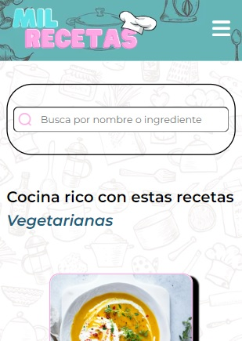
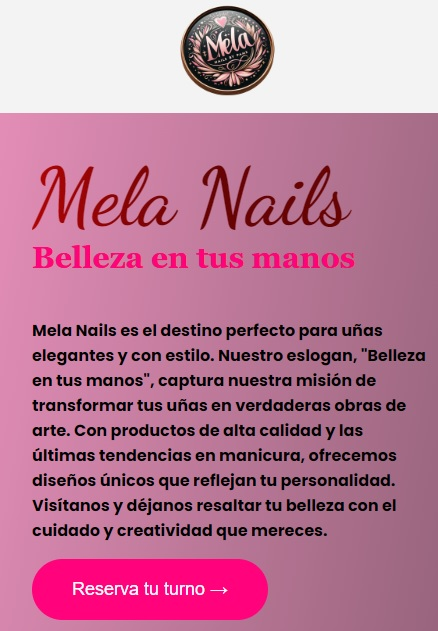
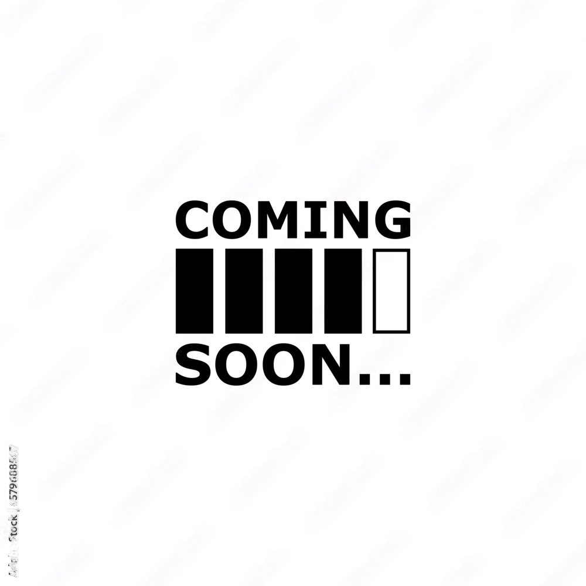

Mil Recetas
Trabajo grupal desarrollado en el curso de Codo a Codo. Una pagina destinada a las recetas, en el cual podras encontrar miles de recetas ya sea por su tendencia o por su categoria. 100% responsive
Saber Más

Mela Nails
Pagina desarrollada para mostrar el arte y el trabajo que se pueden hacer con las uñas, podras encontrar desde imagenes de las uñas, hasta información de contacto. 100% responsive
Saber Más

Futuras paginas
Future pages in process of creation // Futuras paginas en proceso de creación
Saber Más